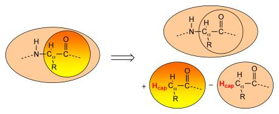

Introduction¶
The Hybrid engine allows the user to set up multi-scale or multi-layered simulations by combining the results of a set of other AMS engines for different regions of the molecular system. The interface is like that of any other AMS engine, with a range of settings as input, and a potential energy and gradients as the main output. As such the Hybrid engine can be used in any AMS application such as geometry optimization, molecular dynamics, etc.
The Hybrid engine can be used for a wide range of multi-scale simulations, involving many different layers of the molecular system and many different levels of accuracy. The most commonly used multi-scale setup is a combined quantum mechanical / molecular mechanical (QM/MM) scheme. Such a QM/MM scheme divides the system into two different regions; (i) a QM region that is described by a QM engine such as ADF or DFTB, and (ii) an MM region that is described by an MM engine such as the ForceField engine. Within the QM/MM definition the user can choose between mechanical embedding and electrostatic embedding, and the choice determines which sub-options and which sub-engines are available.
In the following, first the broad use of the Hybrid engine for a flexible linear combination of engine results is outlined. Second, the QM/MM feature with its two available options (mechanical embedding and electrostatic embedding) is described in detail.
See also
Tutorial: Inorganic linker in organic framework
Linear Combination of Energy Terms¶
Longtime users of the SCM software may know this functionality as QUILD. It can be used to set up a multi-layer computation according to the ONIOM scheme developed by Morokuma, but it has applicability beyond only layered setups. In general, this flexible and straight-forward feature provides a linear combination of results from different engines computed for different regions of the molecular system.
The engines may be all the same, and the regions can overlap or even be identical. Each individual energy is scaled by a weight. Most commonly, the weights will sum to one (the energy is a weighted average of its components), but this is not a requirement of the engine.
There are three main reasons to use such a linear combination of energy terms: to speed up a calculation, make it more accurate, or do some state averaging.
- When the molecular system is large, efficiency may be improved by a layered setup, describing only a small region of interest with an accurate engine, while interaction with the environment is described with a more efficient engine.
- DFT results can sometimes be improved by applying different functionals to different (or the same) regions.
- Experimental results may be more accurately represented by a weighted average over several spin or excited states.
In a three-layered setup (Figure: active region of interest A in yellow, immediate surroundings B in pink, and long-range environment E in blue), the ONIOM energy expression contains five different terms, and uses three different engines (engines 1, 2, 3, in decreasing order of accuracy).
{kind=link}
For systems like DNA, a GGA functional may best describe the intramolecular interactions (Figure: regions A and B), while the hydrogen bonds between regions are better described with an LDA functional. The corresponding energy expression contains five terms, and uses two different engine-setups (engines 1 and 2 for GGA and LDA respectively).
{kind=link}
The Linear Combination of Energy Terms feature is enabled with the Energy block in the Hybrid engine input.
Because of its simplicity the feature works with any combination of sub-engines.
Example
In this two-layer example, a water molecule at the DFTB level is embedded in an environment of a single water molecule at the UFF level. The energy is a linear combination of three different energy terms, with respective weights \(w = (1,1,-1)\).
Task GeometryOptimization
System
Atoms
O -1.8782 0.0294 -0.7574 region=QM
H -0.9986 0.2961 -0.3861 region=QM
H -1.8623 -0.9560 -0.6510 region=QM
O 0.0121 -1.3731 0.5074 region=MM
H 0.8930 -1.7879 0.3172 region=MM
H -0.5625 -2.1395 0.7656 region=MM
End
End
Engine Hybrid
Energy
Term region=QM EngineId=DFTB factor=1.0
Term region=* EngineId=ForceField factor=1.0
Term region=QM EngineId=ForceField factor=-1.0
End
Engine DFTB
Model GFN1-xTB
EndEngine
Engine ForceField
Type UFF
EndEngine
EndEngine
Observe the following
- Regions are defined as usual via the
Systemblock - The energy expression is defined in the
Energyblock, with multiple occurrences of theTermsubkey - The
Hybridengine block contains subblocks of other engines that are to be used - The (sub) engines are referred to by an EngineId, usually the name of the engine, in this case DFTB and ForceField.
QM/MM¶
The Linear Combination of Energy Terms feature is very flexible, and can combine a multitude of layers and levels of accuracy. However, the most common multi-scale scheme is a two-layer scheme, with the active region of interest described at high accuracy, and the environment, which presumably has less impact on the desired outcome, described at lower accuracy. While the definition of high and low accuracy can vary (QM/QM’, MM/MM’, and even MM/QM combinations are possible), most often the high accuracy description is at electronic resolution (QM), while at low-accuracy the smallest particles described are atoms (MM).
{kind=link}
Mechanical embedding¶
The mechanical embedding option is a short-cut to a subset of the possibilities provided by the flexible Linear Combination of Energy Terms described above. In this two-layer setup, the active region A is described with accurate engine (1), while the environment E (as well as the interactions between the two regions) is described with a more efficient engine (2). A subtractive scheme is used to compute the multi-scale energy and gradients. The energy expression involves a linear combination of only three energy terms.
As a result of this subtractive setup, any parameters required by engine(2) need to be provided for the full system. However, if engine(2) is the force field engine (which in QM/MM it will often be), then the corresponding energy terms are comprised of atom-pair interaction energies only. As a result, all contributions in energy-term 2 will cancel against the identical contributions in energy-term 1, which means that arbitrary parameters can be selected for region A energy contributions. The only remaining parameters of interest for engine(2) are those that describe the interaction inside region E and between regions A and E.
Example¶
As in the previous example, a water molecule at the DFTB level is embedded in an environment of a single water molecule at the UFF level. The computation is completely equivalent to the example for the Linear Combination of Energy Terms feature, with the simplified input as the only difference.
Task GeometryOptimization
System
Atoms
O -1.8782 0.0294 -0.7574 region=QM
H -0.9986 0.2961 -0.3861 region=QM
H -1.8623 -0.9560 -0.6510 region=QM
O 0.0121 -1.3731 0.5074 region=MM
H 0.8930 -1.7879 0.3172 region=MM
H -0.5625 -2.1395 0.7656 region=MM
End
End
Engine Hybrid
QMMM
Embedding Mechanical
mmEngineID ForceField
qmEngineID DFTB
qmRegion QM
End
Engine DFTB
Model GFN1-xTB
EndEngine
Engine ForceField
Type UFF
EndEngine
EndEngine
The (electrostatic) interactions between regions are described only at the lowest level of accuracy, so that the electron density in region A is not polarized by the charges in region B.
Supported engines¶
Like the Linear Combination of Energy Terms feature, the mechanical embedding option goes beyond QM/MM in that any combination of engines is implemented (QM/QM’, MM/MM’, MM/QM).
Electrostatic embedding¶
Electrostatic embedding is the more common application of two-layer QM/MM, where active region A is assumed to have an electron density, and this density is polarized by the point charges in environment region E.
{kind=link}
A purely subtractive energy expression is no longer possible, as the interaction energy is not determined by a single description (QM or MM), but by a combination of both.
In practice, atomic point charges from the lower-level engine (usually an MM force field), are passed to the higher level QM engine, which computes the interaction of the electron density in region A with the point charges from region E.
Here \(V^\text{E}\) is the potential from the E-region point charges, \(\rho_\text{A}\) is the charge density of the A-region sub-system, which is affected by the positions of the E-region point charges, \(N_\text{E}\) is the number of E-region atoms, \(q_i^\text{E}\) is the point charge of E-region atom \(i\), and \(\boldsymbol{r}_i^\text{E}\) is the position of E-region atom \(i\).
The remaining non electrostatic interactions are calculated at the MM level by a subtractive scheme.
The nonelectrostatic energy \(E^\text{MM}_\text{nonelstat}\) is obtained by simply setting the MM point charges to zero.
The final QM/MM energy consists of five terms, computed with two different engines.
- The MM energy of region E.
- The QM energy of region A, including interaction with point charges region E.
- The MM energy of full system without electrostatics.
- The MM energy of region E without electrostatics.
- The MM energy of region A without electrostatics.
Currently, only non-polarizable forcefields are supported, so that the MM charges \(q^\text{E}_i\) are not affected by the QM potential.
Example¶
Again, a water molecule at the DFTB level is embedded in an environment of a single water molecule at the UFF level, this time using electrostatic embedding.
Task GeometryOptimization
System
Atoms
O -1.8782 0.0294 -0.7574 region=QM
H -0.9986 0.2961 -0.3861 region=QM
H -1.8623 -0.9560 -0.6510 region=QM
O 0.0121 -1.3731 0.5074 region=MM
H 0.8930 -1.7879 0.3172 region=MM
H -0.5625 -2.1395 0.7656 region=MM
End
End
Engine Hybrid
QMMM
Embedding Electrostatic
mmEngineID ForceField
qmEngineID DFTB
qmRegion QM
End
Engine DFTB
Model GFN1-xTB
EndEngine
Engine ForceField
Type UFF
EndEngine
EndEngine
eor
Supported engines¶
In the electrostatic embedding QM/MM setup of the Hybrid engine, the sub-engines involved can have one of two “roles”: the QM role and the MM role.
Engines supporting the QM role:
- adf
- band
- dftb
Engines supporting the MM role:
- forcefield
Capping Atoms¶
Whenever the boundary between two regions crosses a covalent bond (or better put, whenever the Hybrid engine notices that a sub-engine is assigned a system with dangling bonds), capping atoms - or link atoms - are assigned to satisfy the valence of the boundary atoms (see Figure below). By default, the engine adds hydrogen as capping atom, though a different (single) element can be selected by the user.
The capping atoms are added according to the AddRemove methodology [1], in which the capping atoms follow the position of the real atoms in the total system. By default, the capping atoms are positioned along the vector of the dangling covalent bond, and at a distance that corresponds to the sum of the covalent radii of the capping atom and the boundary atom to which is has been attached. An alternative option can be selected that places the capping atom again along the vector of the dangling bond, but at a distance to the connected boundary atom that is a fraction of the bond between the two boundary atoms in the full system.
Capping can be disabled (via the Energy or QMMM block) and options can be set in the Capping block. An element as well as force field atom-type and charge can be assigned to the capping atom. When more than one capping atom is present in the system, they will all have the same element, type, and charge.
Position of the Boundary¶
By default two sanity checks are performed on user-defined boundaries, and the following choices are not accepted by the engine.
- A boundary across bonds with a bond order larger than 1.25.
The user can prevent this by using the
AllowHighBondOrderssubkey, see the Capping documentation. - A (QM) sub-region with more than one capping atom representing the same MM-boundary atom.
The hybrid engine will not accept this, unless the user overrides it,
see the
CheckCappingsubkey of Capping.
The GUI (amsinput) has an option (Make selection cappable, from the Select menu) to automatically extend a selection, so that the two checks will pass.
QM/MM Partitioning Examples¶
In a QM/MM simulation the basic question is how to partition the system into the QM and MM regions A and E. When studying an active site of a catalyst, for example, one must decide where to put the QM/MM boundary. Putting the boundary too close to the reaction center will jeopardize the chemical realism of the model. On the other hand, if one places the boundary too far away, the computational expense of the QM calculation may become problematic. Each system is different in this respect and the user must perform the proper tests to validate the appropriateness of the QM/MM partitioning used. We strongly suggest that the reader examines the literature on QM/MM methods and understands the basic limitations of the approach.
Below we give examples of the QM/MM partitioning choices that are by default prohibited by the engine. For comparison, we also give some representative examples of QM/MM partitioning that the engine does allow. In the examples, the region enclosed in the dotted polygon represents the A-region and the atoms labeled with ‘LI’ are the MM boundary atoms to be replaced by a capping - or link - atom.
In the examples in Figure 1, the boundary crosses double, triple, or aromatic bonds, so that a simple capping atom cannot satisfy the valence of the QM fragment and the electronic structure of the QM sub-system becomes drastically different from that of the full system.
{kind=link}
Figure 1 Examples of partitioning that should not be used because the link bonds are double or aromatic bonds.
Next, figure 2a depicts examples of partitioning that are not allowed because the MM boundary atom has a covalent bond to more than one QM atom. An MM boundary atom can only be bonded to one QM atom. Figure 2b shows the opposite, which is allowed. In other words, one QM atom can be bonded to more than one MM boundary atom. Note that there is no limit to the number of capping atoms that can be placed, just that each MM boundary atom can only be bonded to one QM atom.
{kind=link}
Figure 2 a) Examples of partitioning that are not allowed because the MM boundary atom has a covalent bond to more than one QM atom. b) The allowed reverse of the examples shown in (a). An MM boundary atom can only bond to one QM atom.
Then, figure 3 provides some representative examples of partitioning that the program does allow. Example a shows a typical solute-solvent QM/MM partitioning where there are no link bonds at all. Example b depicts two separate molecules each possessing a QM and a MM region. We emphasize that any number of molecules and link bonds can be used. Example c seems very similar to the earlier example in Figure 1. The difference is that the ring in Figure 3cd is not aromatic and consequently the link bonds in example d cross single bonds. Example d shows a single molecule, with two QM regions separated by an MM region. For this example, two equivalent pedagogic representations of the sample partitioning are displayed. Example e is a representative organometallic complex.
{kind=link}
Figure 3 Representative examples of QM/MM partitioning that can be used in the Hybrid engine.
Electrostatic Embedding¶
Electrostatic embedding involving capping atoms can, without additional measures, result in unphysical behavior, such as nuclear fusion or extreme repulsion. The problem is the point charge of the MM boundary atom, which is located very close to the QM capping atom. To remedy this, our default implementation sets the charge at the position of the MM boundary atom to zero, and redistributes it over the remaining MM atoms while keeping the total charge (in the MM region) constant. While this avoids plain pathological behavior, the user should note that this alters the dipole moment of the MM region, which may have consequences for the behavior of the system.
In the electrostatic embedding setup, the sub-region E that is passed to the MM-engine is by default not provided with capping atoms, since the MM engine can handle an un-capped system. To compute the electrostatic embedding energy for a system with capping atoms, the energy expression needs to be slightly adjusted.
- The MM energy of region E, without capping atoms.
- The QM energy of capped A-region (\(\text{A}_C\)), including interaction with point charges region E.
- The MM energy of full system without electrostatics.
- The MM energy of region E without electrostatics and without capping atoms.
- The MM energy of capped A-region (\(\text{A}_C\)) without electrostatics.